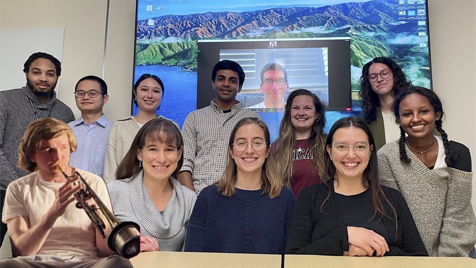
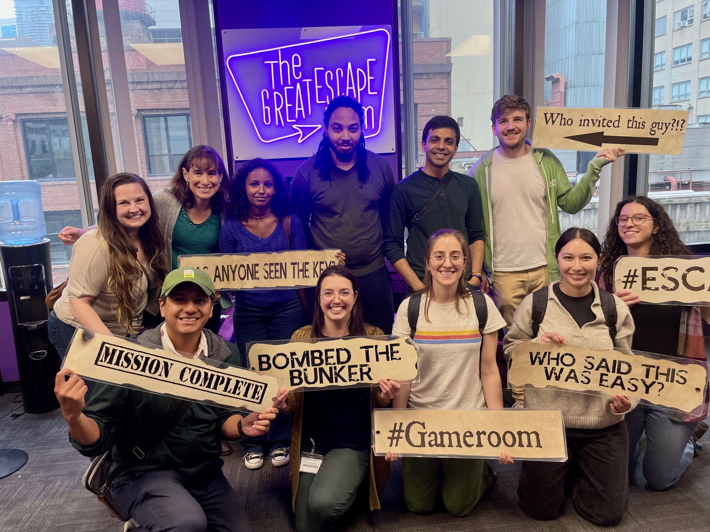
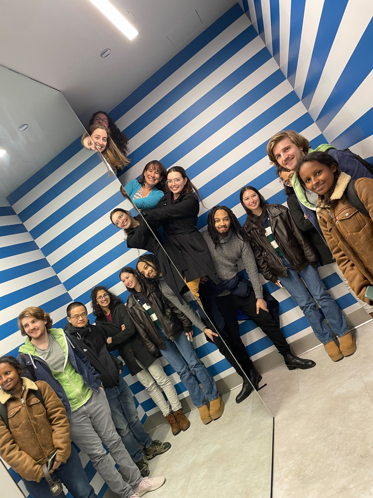

Cohen Lab
Our lab, led by principal investigator Marlene Cohen, is part of the University of Chicago Department of Neurobiology and Neuroscience Institute.
Our lab is interested in how the brain uses visual information to guide perception, decisions, and behavior. Each time we look around, our brains receive far more information than we can use at once. We study how groups of neurons represent that information, and how attention, learning, and memory help us use it flexibly.
We use simultaneous recordings from populations of neurons, behavioral experiments in humans and monkeys, and computational models. By studying how neuronal activity changes with experience and cognitive demands, we aim to understand how the brain supports stable perception while adapting to new tasks and information.
Our current projects examine visual attention, learning, task switching, recognition memory, and the combination of sensory cues. We also investigate how neuronal population representations change during cognitive decline and in models of Alzheimer's disease.
Explore some of our neural coding ideas.


